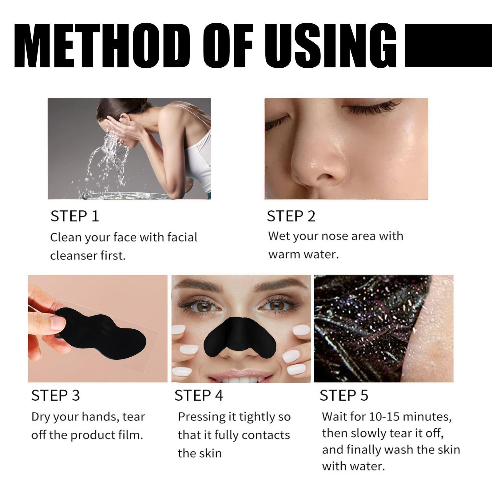

Herbal remedies you can trust. Food you can grow. Personal care that skips the chemicals. This is the Hightower approach to natural health — built on evidence, traditional knowledge, and the conviction that your body already knows how to heal.
Evidence-guided herbal formulations for sleep, stress, digestion, immunity, inflammation, and energy. Every remedy is tiered by evidence — from traditional use to multiple clinical trials.
Start a windowsill apothecary with five beginner-friendly medicinal herbs. Seed-to-remedy guides, soil-to-supplement pairings, and the tools you need to take control of what goes into your body.
Ditch the fluoride and the sulfates. Remineralizing tooth powder, herbal mouthwash, and skin care made from plants you can identify — not ingredients you can't pronounce.
Each category lists herbs traditionally used for that purpose, with the evidence tier clearly marked.
Chamomile, valerian, ashwagandha, California poppy, lavender — traditionally used to support restful sleep and calm the nervous system.
Clinical evidence supports Explore sleep remedies →Ashwagandha, rhodiola, tulsi (holy basil), ginseng, cordyceps — adaptogenic herbs studied for stress resilience and adrenal support.
Clinical evidence supports Explore adaptogens →Ginger, peppermint, fennel, triphala, slippery elm, marshmallow root — traditionally used to soothe and support digestive function.
Traditional use Explore digestive herbs →Elderberry, echinacea, garlic, astragalus, reishi mushroom — botanicals traditionally used during cold and flu season for immune support.
Early research suggests Explore immune herbs →Turmeric (curcumin), boswellia (frankincense), ginger, devil's claw, willow bark — traditionally used to support joint comfort and mobility.
Clinical evidence supports Explore anti-inflammatory herbs →Maca, ginseng, cordyceps, ashwagandha, green tea — traditionally used to support sustained energy without the crash.
Early research suggests Explore energy herbs →Not all herbal claims are equal. On this page, every remedy is tiered by evidence:
We read the science and report what it says — honestly. Every claim here is backed by the evidence tier shown, not by wishful thinking.
We're building a line of Supliful-sourced herbal supplements that map directly to the categories above — standardized extracts, third-party tested, with clear evidence labeling. The first products (ashwagandha root extract capsules, chamomile-lavender sleep tea) are in development.
Browse our apothecary →Five herbs. One windowsill. Zero guesswork. The most reliable way to know what's in your medicine is to grow it yourself.
6" terracotta pots with drainage, seed-starting trays with humidity domes.
Affiliate link placeholderChamomile, calendula, peppermint, lemon balm, garlic. Heirloom, non-GMO.
Affiliate link placeholderOrganic potting mix, perlite for drainage, plant labels and mister.
Affiliate link placeholderFull-spectrum LED panels for winter and north-facing windowsills.
Affiliate link placeholderSeeds from trusted sources: Botanical Interests, Ferry-Morse, Baker Creek Heirloom Seeds.
Instead of fluoride toothpaste (which has been linked to thyroid disruption and skeletal fluorosis with chronic overuse), we use a simple remineralizing powder: calcium carbonate (food-grade diatomaceous earth or eggshell powder), bentonite clay, baking soda, and a trace of xylitol. Studies show hydroxyapatite — the mineral structure of tooth enamel — can be supported topically. This is traditional oral care, validated by modern materials science.
Learn about natural oral care →Calendula-infused oil for cuts and dry skin. Lavender and tea tree for blemishes. Shea butter and coconut oil as a base — no parabens, no sulfates, no fragrance oils. We're building recipes and sourcing guides for each. Traditional herbal skin care that works alongside your body's own repair mechanisms.
Explore natural skin care →We're writing detailed remedy pages for each category above, plus step-by-step grow guides, recipes, and DIY personal care formulations. These will live here once Blake reviews and approves the first batch.
Internal links — recipe pages not yet published.
⚕️ Health & Safety First
The information on this page is for educational purposes and is not medical advice. Herbal remedies can interact with prescription medications. Always consult a qualified healthcare provider before starting any supplement or new health regimen, especially if you are pregnant, nursing, or managing a chronic condition. Never stop or change prescription medication without your doctor.
Evidence tiering: The labels "Traditional use," "Early research suggests," and "Clinical evidence supports" describe the level of available evidence for each category. Structure/function claims are supported by traditional use and/or clinical research. These statements have not been evaluated by the Food and Drug Administration. This product is not intended to diagnose, treat, cure, or prevent any disease.
Affiliate disclosure: Some links on this page may become affiliate links in the future. If we add affiliate links and you make a purchase through them, we may earn a commission at no extra cost to you. [FTC Affiliate Disclosure — placeholder until affiliate programs are approved.] As an Amazon Associate we may earn from qualifying purchases.